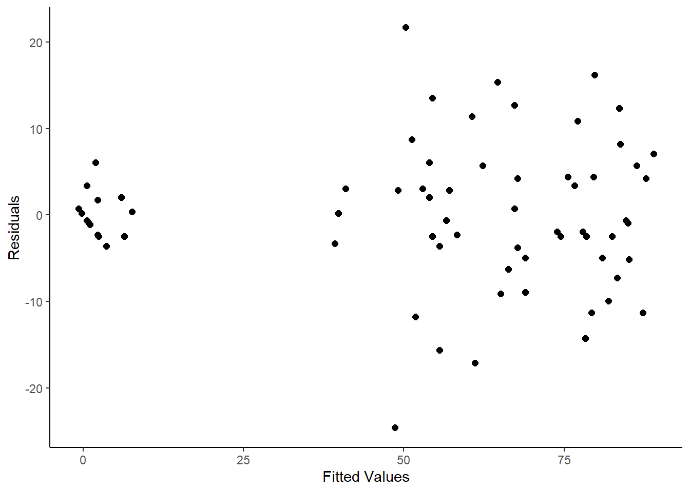

library(car)
library(dae)
library(dplyr)
library(emmeans)
library(ggplot2)
library(lmerTest)
library(magrittr)
library(predictmeans)
data(DataExam4.3)
# Pg. 50
fm4.2 <-
aov(
formula =
percent ~ repl + contcomp + seedlot +
treat/contcomp + contcomp/seedlot +
treat/contcomp/seedlot
, data = DataExam4.3
)
# Pg. 54
anova(fm4.2)
Analysis of Variance Table
Response: percent
Df Sum Sq Mean Sq F value Pr(>F)
repl 2 35 18 0.1804 0.8355379
contcomp 1 58542 58542 601.5217 < 0.00000000000000022 ***
seedlot 5 2894 579 5.9481 0.0002538 ***
treat 2 5300 2650 27.2295 0.00000001576 ***
contcomp:seedlot 5 1347 269 2.7682 0.0287571 *
contcomp:seedlot:treat 10 961 96 0.9876 0.4674993
Residuals 46 4477 97
---
Signif. codes: 0 '***' 0.001 '**' 0.01 '*' 0.05 '.' 0.1 ' ' 1
# Pg. 54
model.tables(x = fm4.2, type = "means")
Tables of means
Grand mean
51.38889
repl
1 2 3
52.33 50.67 51.17
rep 24.00 24.00 24.00
contcomp
Treated control
67.85 2
rep 54.00 18
seedlot
18211 18212 18217 18248 18249 18265
58 52.33 49 40.67 48.67 59.67
rep 12 12.00 12 12.00 12.00 12.00
treat
nick bw&s control bw1min
40.43 49.31 51.39 64.43
rep 18.00 18.00 18.00 18.00
contcomp:seedlot
seedlot
contcomp 18211 18212 18217 18248 18249 18265
Treated 77.33 69.33 63.11 53.33 64.89 79.11
rep 9.00 9.00 9.00 9.00 9.00 9.00
control 0.00 1.33 6.67 2.67 0.00 1.33
rep 3.00 3.00 3.00 3.00 3.00 3.00
contcomp:seedlot:treat
, , treat = nick
seedlot
contcomp 18211 18212 18217 18248 18249 18265
Treated 65.33 54.67 57.33 40.00 49.33 74.67
rep 3.00 3.00 3.00 3.00 3.00 3.00
control
rep 0.00 0.00 0.00 0.00 0.00 0.00
, , treat = bw&s
seedlot
contcomp 18211 18212 18217 18248 18249 18265
Treated 78.67 68.00 54.67 52.00 61.33 80.00
rep 3.00 3.00 3.00 3.00 3.00 3.00
control
rep 0.00 0.00 0.00 0.00 0.00 0.00
, , treat = control
seedlot
contcomp 18211 18212 18217 18248 18249 18265
Treated
rep 0.00 0.00 0.00 0.00 0.00 0.00
control 0.00 1.33 6.67 2.67 0.00 1.33
rep 3.00 3.00 3.00 3.00 3.00 3.00
, , treat = bw1min
seedlot
contcomp 18211 18212 18217 18248 18249 18265
Treated 88.00 85.33 77.33 68.00 84.00 82.67
rep 3.00 3.00 3.00 3.00 3.00 3.00
control
rep 0.00 0.00 0.00 0.00 0.00 0.00
emmeans(object = fm4.2, specs = ~ contcomp)
contcomp emmean SE df lower.CL upper.CL
Treated 67.9 1.34 46 65.15 70.55
control 2.0 2.33 46 -2.68 6.68
Results are averaged over the levels of: repl, seedlot, treat
Confidence level used: 0.95
emmeans(object = fm4.2, specs = ~ seedlot)
seedlot emmean SE df lower.CL upper.CL
18211 38.7 3.29 46 32.0 45.3
18212 35.3 3.29 46 28.7 42.0
18217 34.9 3.29 46 28.3 41.5
18248 28.0 3.29 46 21.4 34.6
18249 32.4 3.29 46 25.8 39.1
18265 40.2 3.29 46 33.6 46.8
Results are averaged over the levels of: repl, treat, contcomp
Confidence level used: 0.95
emmeans(object = fm4.2, specs = ~ contcomp + treat)
treat contcomp emmean SE df lower.CL upper.CL
nick Treated 56.9 2.33 46 52.21 61.57
bw&s Treated 65.8 2.33 46 61.10 70.46
bw1min Treated 80.9 2.33 46 76.21 85.57
control control 2.0 2.33 46 -2.68 6.68
Results are averaged over the levels of: repl, seedlot
Confidence level used: 0.95
emmeans(object = fm4.2, specs = ~ contcomp + seedlot)
contcomp seedlot emmean SE df lower.CL upper.CL
Treated 18211 77.33 3.29 46 70.7 84.0
control 18211 0.00 5.70 46 -11.5 11.5
Treated 18212 69.33 3.29 46 62.7 76.0
control 18212 1.33 5.70 46 -10.1 12.8
Treated 18217 63.11 3.29 46 56.5 69.7
control 18217 6.67 5.70 46 -4.8 18.1
Treated 18248 53.33 3.29 46 46.7 60.0
control 18248 2.67 5.70 46 -8.8 14.1
Treated 18249 64.89 3.29 46 58.3 71.5
control 18249 0.00 5.70 46 -11.5 11.5
Treated 18265 79.11 3.29 46 72.5 85.7
control 18265 1.33 5.70 46 -10.1 12.8
Results are averaged over the levels of: repl, treat
Confidence level used: 0.95
emmeans(object = fm4.2, specs = ~ contcomp + treat + seedlot)
treat contcomp seedlot emmean SE df lower.CL upper.CL
nick Treated 18211 65.33 5.7 46 53.9 76.8
bw&s Treated 18211 78.67 5.7 46 67.2 90.1
bw1min Treated 18211 88.00 5.7 46 76.5 99.5
control control 18211 0.00 5.7 46 -11.5 11.5
nick Treated 18212 54.67 5.7 46 43.2 66.1
bw&s Treated 18212 68.00 5.7 46 56.5 79.5
bw1min Treated 18212 85.33 5.7 46 73.9 96.8
control control 18212 1.33 5.7 46 -10.1 12.8
nick Treated 18217 57.33 5.7 46 45.9 68.8
bw&s Treated 18217 54.67 5.7 46 43.2 66.1
bw1min Treated 18217 77.33 5.7 46 65.9 88.8
control control 18217 6.67 5.7 46 -4.8 18.1
nick Treated 18248 40.00 5.7 46 28.5 51.5
bw&s Treated 18248 52.00 5.7 46 40.5 63.5
bw1min Treated 18248 68.00 5.7 46 56.5 79.5
control control 18248 2.67 5.7 46 -8.8 14.1
nick Treated 18249 49.33 5.7 46 37.9 60.8
bw&s Treated 18249 61.33 5.7 46 49.9 72.8
bw1min Treated 18249 84.00 5.7 46 72.5 95.5
control control 18249 0.00 5.7 46 -11.5 11.5
nick Treated 18265 74.67 5.7 46 63.2 86.1
bw&s Treated 18265 80.00 5.7 46 68.5 91.5
bw1min Treated 18265 82.67 5.7 46 71.2 94.1
control control 18265 1.33 5.7 46 -10.1 12.8
Results are averaged over the levels of: repl
Confidence level used: 0.95
DataExam4.3 %>%
dplyr::group_by(treat, contcomp, seedlot) %>%
dplyr::summarize(Mean = mean(percent))
# A tibble: 24 × 4
# Groups: treat, contcomp [4]
treat contcomp seedlot Mean
<fct> <fct> <fct> <dbl>
1 nick Treated 18211 65.3
2 nick Treated 18212 54.7
3 nick Treated 18217 57.3
4 nick Treated 18248 40
5 nick Treated 18249 49.3
6 nick Treated 18265 74.7
7 bw&s Treated 18211 78.7
8 bw&s Treated 18212 68
9 bw&s Treated 18217 54.7
10 bw&s Treated 18248 52
# ℹ 14 more rows
RESFIT <-
data.frame(
residualvalue = residuals(fm4.2)
, fittedvalue = fitted.values(fm4.2)
)
ggplot(mapping = aes(
x = fitted.values(fm4.2)
, y = residuals(fm4.2))) +
geom_point(size = 2) +
labs(
x = "Fitted Values"
, y = "Residuals"
) +
theme_classic()